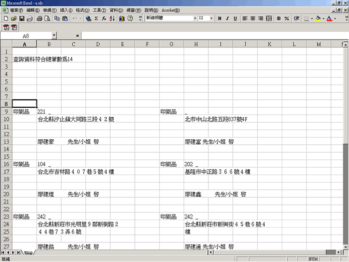
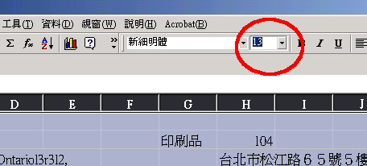
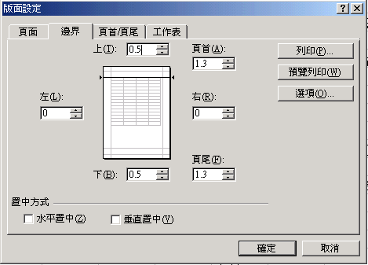
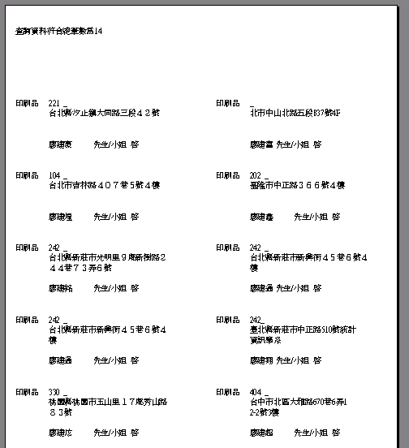
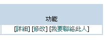
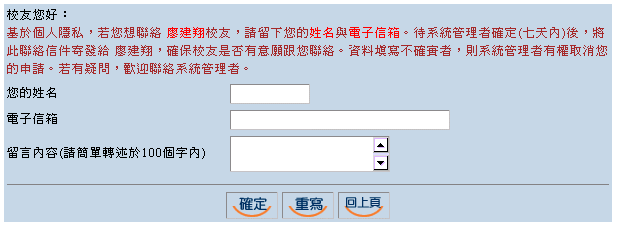
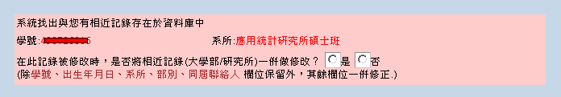
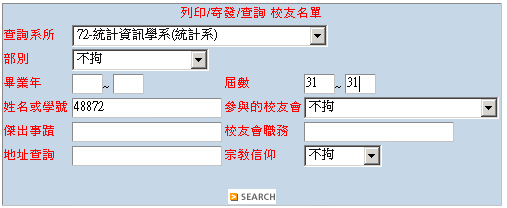

常見問題集

因為該校友並無「身份證字號」及「密碼」，系統為安全起見，需校友向系統管理者申請密碼做為登入安全判斷。也請校友務必將"出生年月日"與"電子郵件信箱"填寫確實，經管理者判斷合格者，將會發送一封密碼信給校友。
由於歷年校友資料逐漸增加，目前已發現在「屆數」與「入學年」出處最多，還煩請校友及各系所秘書多多更正。若有批次作業困擾可洽系統負責人詢問。
Step 1. 將查詢結果儲存為大宗郵件標籤(一般式)，如下圖。
Step 2. 使用全選[Ctrl+A]，並把字型大小調整成為13(鍵盤輸入13後，按下Enter鍵)，如下圖。
Step 3. 在Excel中[檔案]─[版面設定]，並將頁面大小設定邊界上(0.5cm)、下(0.5cm)、左(0cm)、右(0cm)或上(0.8cm)、下(0cm)、左(0cm)、右(0cm)，以配合HP印表機列印標籤，如下圖。
Step 4. 預覽列印時，便可看到每頁整齊的標籤囉，請看下圖。(第一格標籤將列印共幾筆資料符合搜尋條件)
若標籤大小難以調整或跳頁有問題 者，建議使用(橫列式)方式列印。
Step 1. 將查詢結果儲存為大宗郵件標籤(橫列式)，如存至D:\Sample.xls檔。
Step 2. 利用Word檔案做「合併列印」功能，開啟D:\Sample.xls檔做標籤的合併。
更詳細「合併列印」的圖例步驟說明----More Detail
Step 1. 請在網頁中查詢到該校友結果後，於功能中按下[我要聯絡此人]；若沒有此選項，則代表該校友無電子郵件帳號。如下圖。
Step 2. 為考量個人隱私安全，請填寫申請人姓名與電子信箱，如下圖。待系統管理者確認(七天內)後，將此聯絡信件寄發給該校友，確保校友是否有意願跟您聯絡。資料填寫不確實者，則系統管理者有權取消您的申請。
附註：若需要整屆同學的通訊錄，請向公共事務室提出申請。
在修改個人資料時，系統將自動搜尋資料庫中是否存有相似記錄(如：大學部與研究所都就讀輔大者)。系統並會詢問使用者是否修改此記錄後，一併修改相似記錄。如下圖。
密碼申請信需要經過資料審核，我們將會儘速處理。由於寄發密碼信乃使用系統程式，所以當信箱有設防火牆、免費信箱時，容易造成無法收到信件。遇此問題 時，歡迎聯絡系統管理者，並說明自己的學號、姓名、系級。
右上方的帳號、密碼為系統管理者、169個系所所使用登入位置，一般使用者無法使用。 校友收到的密碼是當在查詢自己姓名、學號後，按下[詳細]資料或[修改]資料時，系統會要求輸入此校友的密碼作為安全判斷。
- 查詢 系上全部名單─輸入查詢條件僅選擇「部別」既可。範例如下：
查詢 某屆學生名單

(1)輸入查詢條件可選擇「屆數」,條件如 31~31,代表查詢起始屆數以及終止屆數皆為第31屆
(2)或使用「部份姓名及部份學號」,條件如48872,代表查詢學號內有48872的學生,既可查詢到該屆(88年入學)學生名單。範例如下：
